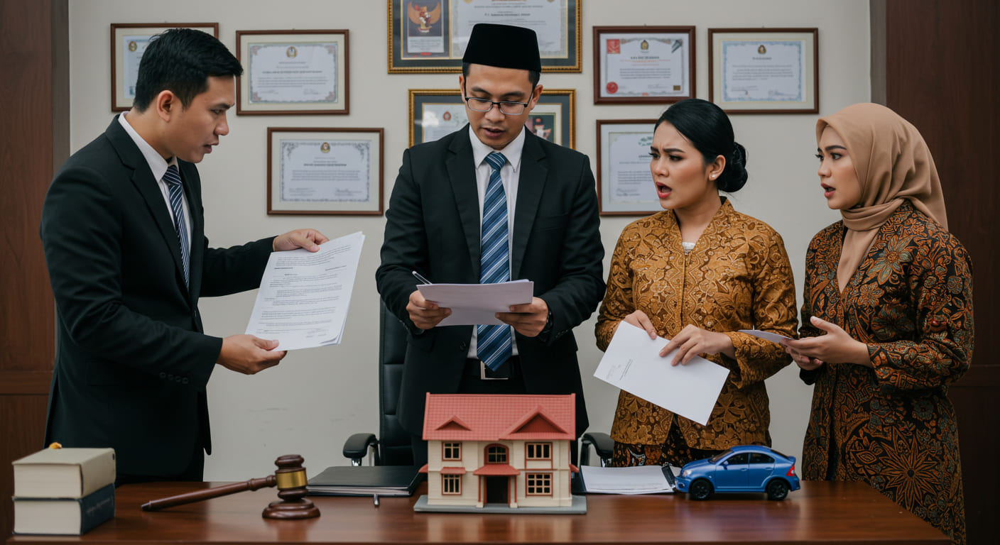

Langkah-Langkah Perceraian dengan Bantuan Pengacara

Pendahuluan
Proses perceraian di Indonesia tidak hanya melibatkan keputusan pribadi, tetapi juga aspek hukum yang kompleks dan mengikat. Banyak pasangan yang tidak memahami prosedur hukum yang harus ditempuh, sehingga perceraian menjadi lebih sulit dan berkepanjangan. Perceraian juga mencakup berbagai aspek, seperti hak asuh anak, pembagian harta gono-gini, dan hak serta kewajiban masing-masing pihak setelah perceraian.
Dengan pendampingan pengacara, setiap tahapan perceraian dapat dijalani dengan lebih lancar dan adil. Pengacara berperan dalam memastikan bahwa hak-hak Anda terlindungi dan keputusan hukum yang diambil sesuai dengan kepentingan terbaik Anda. Berikut adalah tahapan perceraian dengan bantuan pengacara.
Langkah-Langkah Perceraian
1. Konsultasi Awal dengan Pengacara
Pada tahap awal, pengacara akan memahami alasan perceraian dan memberikan saran terbaik terkait hukum yang berlaku. Mereka akan mengevaluasi kasus Anda, memberikan informasi tentang proses hukum yang akan ditempuh, dan membantu Anda memahami hak serta kewajiban dalam perceraian. Pengacara juga akan menjelaskan kemungkinan hasil dan strategi terbaik yang dapat diambil untuk mencapai penyelesaian yang adil. (Baca lebih lanjut di sini)
2. Penyusunan dan Pengajuan Gugatan Cerai
Gugatan cerai harus diajukan ke pengadilan yang berwenang. Jika pasangan beragama Islam, gugatan diajukan ke Pengadilan Agama, sedangkan untuk non-Muslim ke Pengadilan Negeri. Penyusunan gugatan memerlukan kejelasan alasan perceraian, bukti yang kuat, serta dokumen-dokumen yang sah. Pengacara akan memastikan bahwa gugatan disusun dengan benar untuk menghindari penolakan atau permasalahan hukum di kemudian hari. (Pelajari lebih lanjut di Fauzan Taufik)
3. Proses Mediasi
Setelah pengajuan gugatan, pengadilan akan mengupayakan mediasi terlebih dahulu. Mediasi bertujuan untuk mendamaikan kedua belah pihak dan mencari solusi terbaik tanpa perlu melanjutkan ke persidangan yang panjang dan emosional. Jika mediasi berhasil, pasangan dapat menyepakati penyelesaian tanpa melalui proses pengadilan lebih lanjut. Namun, jika tidak ditemukan kesepakatan, maka proses perceraian akan dilanjutkan ke tahap persidangan.
4. Sidang Perceraian
Jika mediasi tidak menghasilkan kesepakatan, maka proses berlanjut ke persidangan. Sidang perceraian terdiri dari beberapa tahapan, termasuk pembacaan gugatan, jawaban tergugat, pembuktian, hingga putusan pengadilan. Pengacara berperan dalam mendampingi klien, menyusun strategi hukum, menghadirkan saksi, serta mengajukan bukti yang dapat memperkuat klaim klien. Sidang ini juga mencakup aspek penting seperti hak asuh anak dan pembagian harta gono-gini.
5. Hak Asuh Anak dan Tanggung Jawab Keuangan
Dalam kasus perceraian yang melibatkan anak, hak asuh menjadi aspek yang sangat penting. Pengadilan akan mempertimbangkan faktor-faktor seperti kondisi finansial, kedekatan emosional dengan anak, serta kemampuan dalam memenuhi kebutuhan anak. Pengacara akan membantu memastikan bahwa kepentingan terbaik anak tetap menjadi prioritas dalam pengambilan keputusan. Selain itu, pengacara juga akan membantu mengatur tanggung jawab keuangan seperti tunjangan anak dan mantan pasangan sesuai dengan hukum yang berlaku.
6. Pembagian Harta Gono-Gini
Salah satu masalah terbesar dalam perceraian adalah pembagian harta bersama (gono-gini). Harta yang diperoleh selama pernikahan umumnya dianggap sebagai milik bersama, kecuali ada perjanjian pranikah yang mengatur sebaliknya. Pengacara akan membantu memastikan bahwa pembagian aset dilakukan dengan adil dan sesuai dengan hukum, serta menghindari manipulasi atau penyalahgunaan hak oleh salah satu pihak.
7. Putusan dan Akta Cerai
Setelah pengadilan mengeluarkan putusan cerai, langkah terakhir adalah pengurusan akta cerai. Akta cerai merupakan bukti sah bahwa pernikahan telah berakhir secara hukum. Pengacara akan memastikan bahwa semua dokumen resmi diperoleh dan diproses dengan benar agar tidak ada hambatan dalam penggunaan status hukum baru Anda.
Kesimpulan
Perceraian bukan hanya soal mengakhiri hubungan pernikahan, tetapi juga memastikan bahwa setiap hak dan kewajiban pasca-cerai terjamin secara hukum. Dengan bantuan pengacara, Anda dapat menjalani proses perceraian dengan lebih aman, efisien, dan tanpa risiko hukum yang merugikan di masa depan. Kami siap mendampingi Anda dalam setiap tahapan perceraian dengan profesionalisme dan empati.
Jangan ragu untuk menghubungi kami melalui WhatsApp dan konsultasikan masalah Anda secara GRATIS. Dengan pendampingan pengacara yang tepat, Anda dapat menjalani proses perceraian dengan lebih tenang dan terjamin.